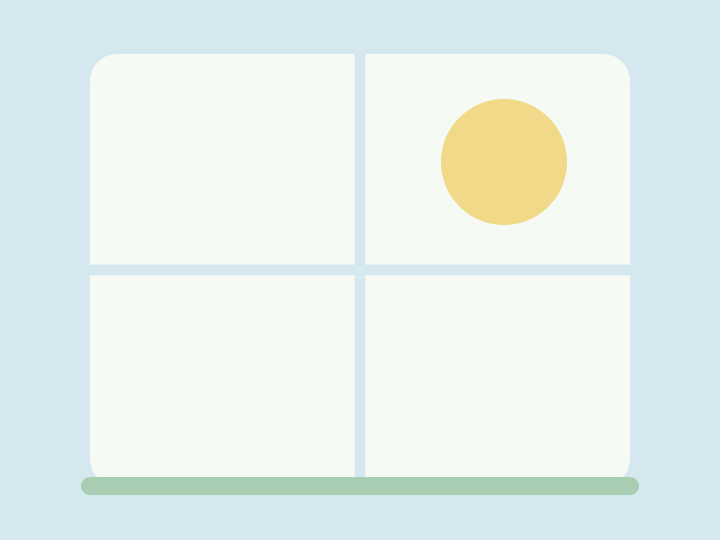
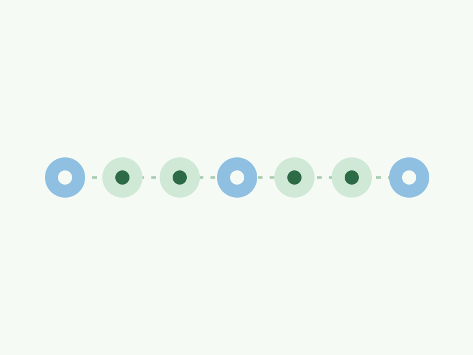
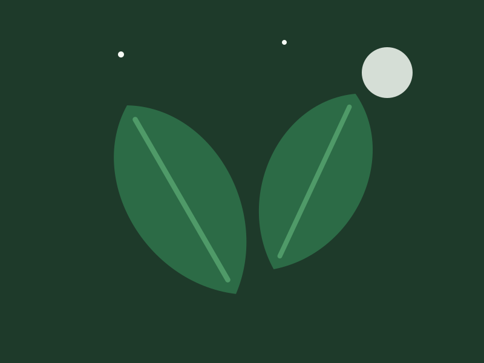

Monday
Monstera, water until it runs
Done on Monday morning. Two litres, then the saucer emptied after ten minutes.
A retemplate template
White-green air by day, deep forest by night, Manrope set light and wide, and one frond that moves in a slow breeze. Made for apps and sites about plants. The markup is the same as every template here; only the stylesheets and the art differ.
Cards in a stack are a list. Add breathe-stem and the list becomes a sequence: one thin stem, a leaf at each card, first thing first. breathe-now marks the card that is due and breathe-done the ones behind you. These are ordinary horizontal cards; the stem and the leaves are pseudo-elements. Take css/, js/theme.js and assets/ and you have the whole template; everything else on this page is here to show it.
Monday
Done on Monday morning. Two litres, then the saucer emptied after ten minutes.

Today, Wednesday
The fern wants damp air more than wet soil. Mist the fronds and top up the pebble tray.

Saturday
It leans toward the window. Turn the pot a quarter each week and it grows even.
The card is a white panel on a soft shadow with no border. Add breathe-leaf and its picture takes the leaf cut: two corners round, two sharp, set in from the edge. An icon sits in a mint disc.

theme.css holds the tokens, the palette and the breeze settings; global.css holds every rule that uses them. The palette block pastes straight into a retoken site. See the tokens.
Every colour is a light-dark() pair. The dark half is forest, a blue-green, and never brown. Both halves clear 4.5:1 on text, links and buttons.
Every template has one feature card with an effect of its own. Breathe's is a mint panel that lifts on a green shadow; its picture leans a degree with it, as if it caught the same air. Rest on it.

The lift and the lean are transitions on the card and its image, so this is the same card markup as the three above. It answers to keyboard focus inside the card too.
The fifty-fifty block gives a picture half the width and the words the other half. With breathe-leaf the panel loses its box and the picture takes the leaf cut, so the two halves float on the page. Without it you get the boxed version; fifty-fifty-reverse puts the picture on the right. On a phone the picture comes first either way.

The leaf cut
A heading, a paragraph and a single call to action. That is the whole pattern, and it carries most landing pages.
How it is built
Boxed, mirrored
Alternate the two down a page and the eye is led from side to side without any extra styling.
Read the docsAccordions are native <details> elements. Give a group of them the same name and opening one closes the others, with no script. The marker is a mint disc with a plus that turns.
No. Copy the folder, link the two stylesheets and the one script, and write HTML.
Only the frond. The stem sways about two degrees from its base over seven seconds and each leaf lags a little behind it. Under prefers-reduced-motion it stands still. Nothing else in the template animates on its own.
Anything from 2024 on: the template relies on light-dark(), :has(), popovers and exclusive accordions.
A single accordion stands on its own.
css/, js/theme.js, assets/ and this folder's README.md. The two fonts come from Google Fonts by one <link>; the README says how to self-host them instead.
Click any of them. The lightbox is a <dialog>; the arrows and the thumbnails are plain links, and Esc closes it.




Buttons are pills in three kinds and three sizes; breathe-quiet is the second action beside a primary, a link with an arrow. A switch is a checkbox with role="switch". Badges carry state; breathe-mint is the one you should notice. Banners are tinted with a disc for the mark.
Tables sit in a wrapper that scrolls sideways when they are wider than the page. Add breathe-week and the columns after the first are days: a cell with breathe-drop shows a drop, breathe-done fades it, and breathe-today tints a column mint. The words stay in a hidden span for anyone reading by ear.
| Plant | Mon | Tue | Wed | Thu | Fri | Sat | Sun |
|---|---|---|---|---|---|---|---|
| Monstera | Watered | ||||||
| Maidenhair fern | Mist | Mist | Mist | ||||
| Pothos | Water | ||||||
| Snake plant |
Dialogs are native too. The button below opens one; it closes itself through a form.
Prose is what most pages are made of, so .prose styles every construct a markdown renderer produces: headings in Manrope with tight tracking, quotes as soft sage panels, code with a hairline. The blog post page runs the full test document through it; defaults shows every bare element.
A plant does not need a reminder. You do. That is the whole app.
One italic line in Instrument Serif, for a sentence that deserves to be said slowly.